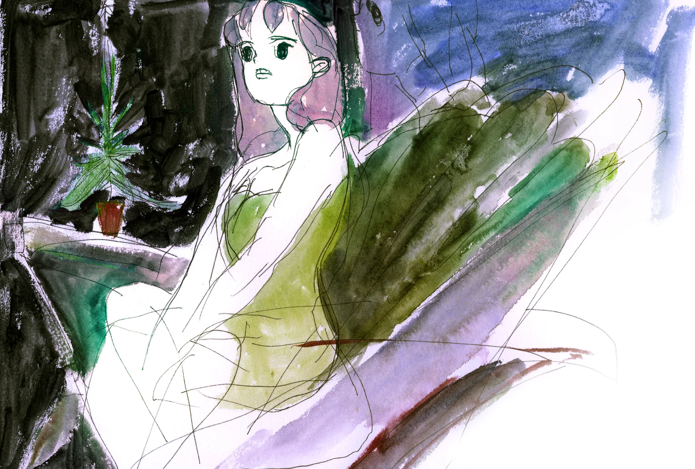
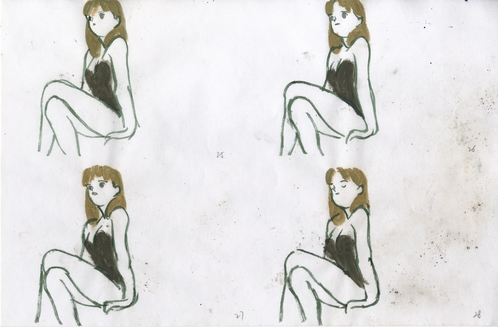
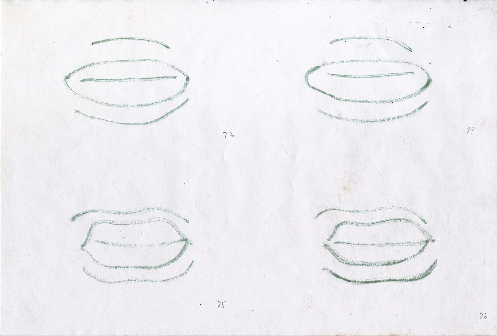
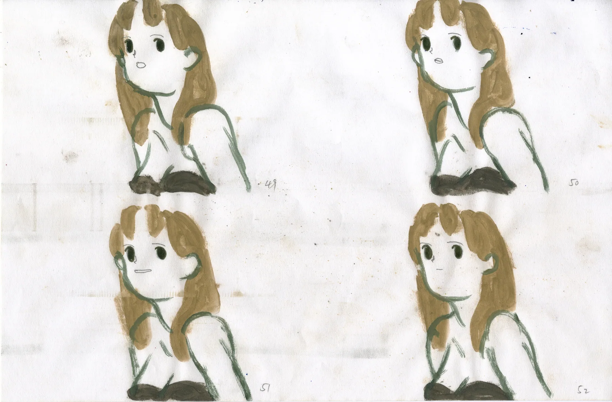

This 30 second animation is an adaption to an audio piece downloaded from British Audio Library

Initial concept in my sketchbook, watercolor and pen, A5

frame 25-28, pencil and watercolor, A4

frame 73-76, watercolor, A4

frame 49-52, pencil and watercolor, A4